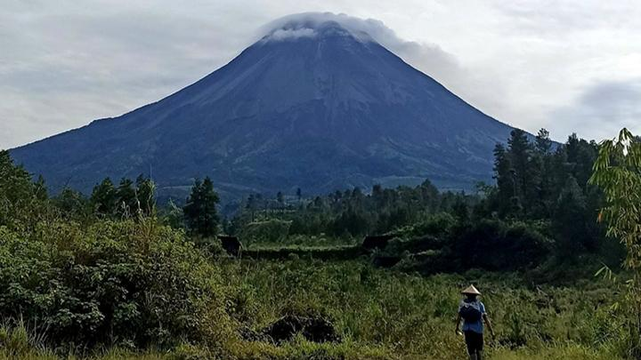
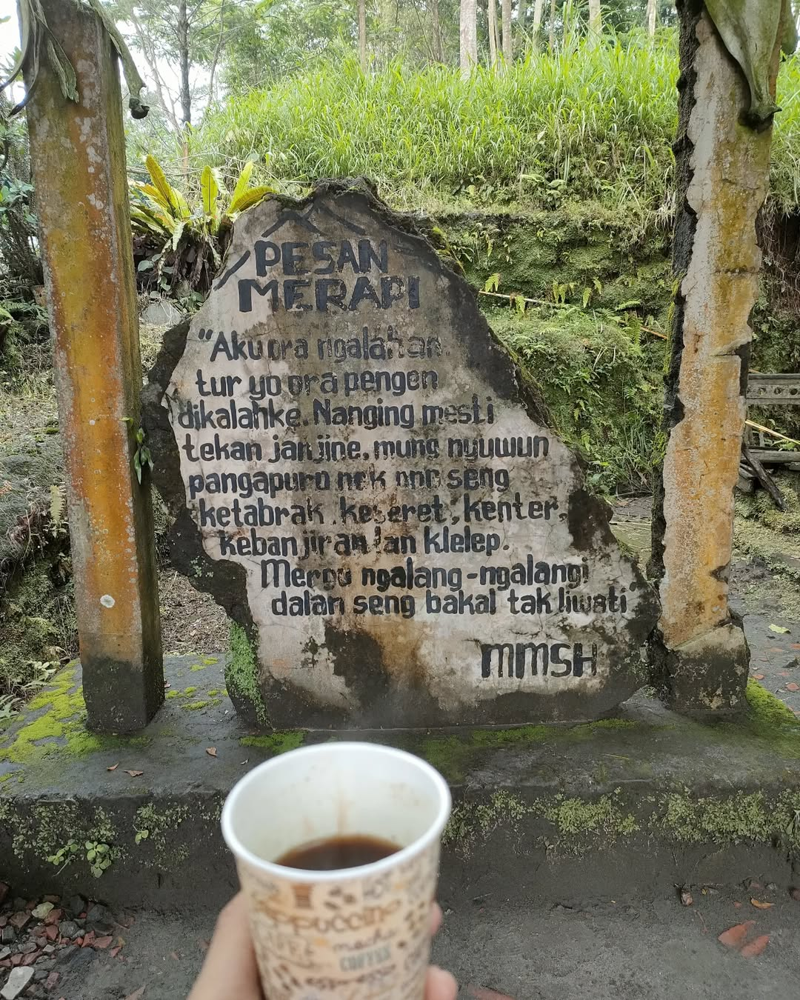
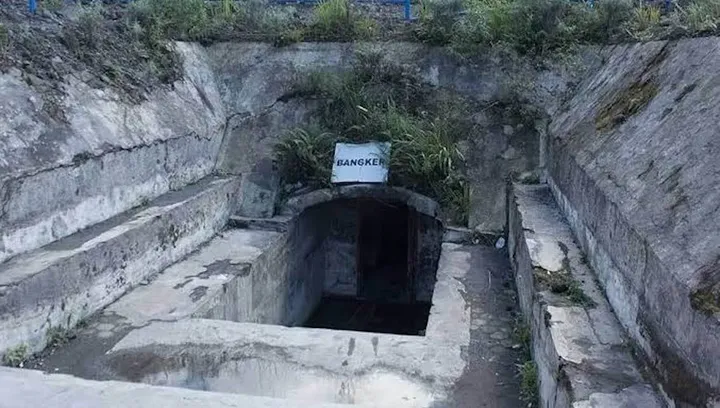

Pertama yang saya kunjungi adalah GUNUNG MERAPI.
Berjuta memori yang tertanam dalam diri saya saat saya berkunjung berwisata ke Gunung Merapi, rasa kangen dengan keindahan wujud Gunung Merapi ingin sekali saya datang kembali ke sana.  Saat itu saya mengikuti tour dengan menggunakan jeep yang dinamakan wisata lava tour. Dengan mobil jeep kita mendaki ke atas hingga tiba di bunker Kaliadem, sebuah bunker yang ada di badan gunung Merapi yang pada saat itu terjadi sebuah kejadian beberapa reporter masuk kedalam bunker saat gunung Merapo meletus tetapi naas, seluruh reporter malah terpanggang di dalam bunker tersebut.  Setelah dari bunker Kaliadem, kita mengunjungi Museum Rumah Mbah Maridjan. Mbah Maridjan adalah seorang juru kunci dalam menenangkan gunung Merapi, tetapi pada tahun 2010 saat Gunung Merapi meletus kembali, Mbah Maridjan tidak memilih untuk dievakuasi, tetapi Mbah Maridjan tetap di dalam rumahnya dan meninggal dalam keadaan sujud dikarenakan terbakar dengan lahar Gunung Merapi. Dari kisah Mbah Maridjan ini, ia dianggap sebagai seorang yang setia kepada Gunung Merapi sebagai seorang juru kunci.